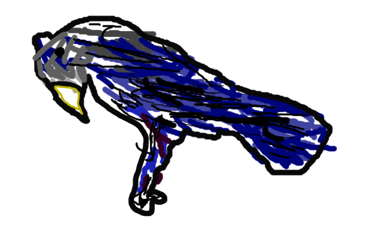

I'm hungry. Food is running low and we can't even travel...The Bitterroots are frozen.
Might as well try to treat the wounded.
Merriwether Lewis
2/2/1806
Another day, another new plant. This time it's a berry, which I named the "Blue Elderberry"
They look like small grapes.
Ocian in View! It's glorious! Can't wait to setup camp!
@13 "'Ocian in View!''
Merriwether Lewis
10/20/1805
Today I discovered a new Bird, now named the "Stellar's Jay." It's very pretty.

Merriwether Lewis
8/11/1805
Finally found the Shoshone! I saw a Indian on horseback and he led us to the leader
of the tribe who luckly is Sacagawea's brother!
@11 "Among the Shoshone"
These mountains are looking pretty scary...we are definitely going to need horses.
We are looking for the Shoshone Tribe, but they are nowhere to be seen...
@10 "Toward the Continental Divide"
Merriwether Lewis
6/13/1805
I found the Great Falls! I knew it was the southern fork! Haha! It's crazy to think i'm the first
white man to go here.
#discovery
@9 "Around the Great Falls"
Fork in the river......argh which way to go which way to go? I think it's
the the south fork, along with Lewis
@8 "A Fork in the River"
Rockies Ahoy! I see them! This is going to be really hard...May the gods be with us.
@7 "Rockies in Sight"
Merriwether Lewis
5/25/1805
Found a new Skunk! These are very beautiful creatures. Named the Northern Plains Striped Skunk.

I just saved all your journals, gems, and a boat! We need to be more careful.
@7 "Rockies in Sight"
Merriwether Lewis
4/29/1805
Grizzly bears are really really scary. One almost got me the other day! I thought they were
only a danger to Indians with only bows.
@6 "Into Grizzly Country"
Toussaint Charbonneau
2/5/1805
I'm new here and I know languages. Lots of them. I know the area and the Indians
like me. Canada is great and all, but adventure is better.
@P3 "Winter Among the Mandan"
The river is starting to freeze. Time to settle down for the winter, a fort is in progress.
@P2 "Racing Against Winter's Approach"
First encounter with the Sioux. They seem nice enough, but they warn us of the dangers upstream. Time to put our charms on!
#smile
@P2 "Heading Into Danger?"
Sergeant Charles Floyd
8/20/1803
I feel really really sick, my abdomen is exploding!
#appendicitis
@P2 "Heading Into Danger?"
Merriwether Luis
5/20/1803
Getting ready to go! All of my men are getting ready to go. West coast, here we come!
#discovery
@P1 "The Journey Begins"